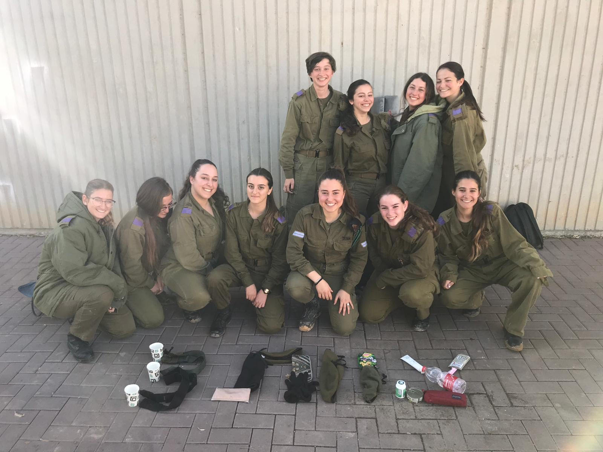
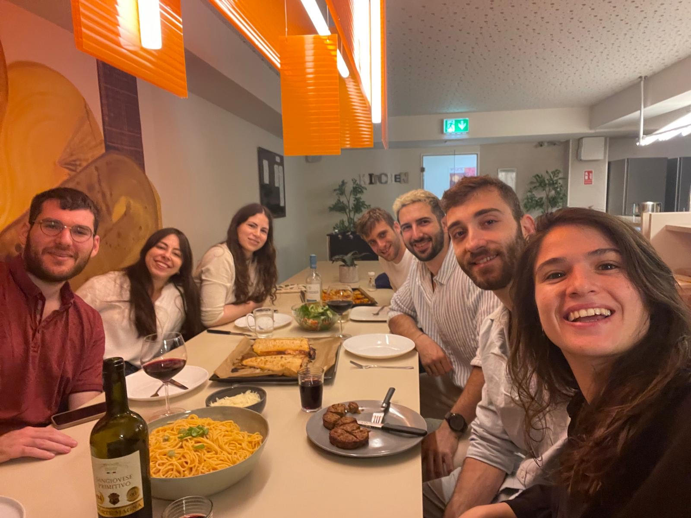

During 2012, I attended Hakfar Hayarok High School. I majored in Arts, Theater, and Biology, achieving 5
units in Mathematics and English. I represented my peers in student councils and volunteered in
organizations like Amcha and La’Tet.

In 2018, I enlisted as an Operations NCO in the infantry division. I served for six months in Division
91, responsible for the northern border, and later became an operations officer.

In 2020, I served as an Officer in the Special Operations Room, leading and training a team of 12
soldiers.
My responsibilities included conducting data analysis to support decision-making processes, developing
and
presenting strategic reports to senior officers, and managing projects focused on implementing and
improving
new systems.
From 2021 to 2023, I served as a Control Officer in the Operations Directorate. I led, trained, and
managed
a team of 40+ reservists, implemented new systems to enhance operational efficiency, and ensured the
smooth
execution of critical missions. My role required strategic planning and a high level of coordination
with
various military units.

During my studies at Reichman University, I participated in several programs and clubs that shaped my
academic and personal growth.
- I was an active member of the Programming Club, where I developed a platform to commemorate the fallen
soldiers of the Iron Swords War.
- I served as a mentor in the programming preparatory course and as a student guide for new students
joining the university.
- I participated in the TECH TALK club, where I attended inspiring lectures by leading figures in the
high-tech industry.
- I actively took part in the ZERO TO HERO club, aimed at integrating students into the high-tech world
and equipping them with tools to join the workforce.
- I was part of a team that competed in a university-wide hackathon with over 300 participants, where we
won 2nd place.
- I successfully completed a Product Management course and an AI course hosted by Microsoft.

In 2024, I worked at Paradox.AI, a company revolutionizing recruitment processes with AI solutions. I
established and led a data team, optimizing AI recruitment tools by analyzing and tagging data to
improve
LLM performance. I collaborated with cross-functional teams to ensure accurate, reliable AI solutions
for
clients, gaining expertise in LLMs, data analysis, and conversational AI technology.

In 2024, I participated in a six-month student exchange program at TU Darmstadt, ranked 5th in Computer
Science in Germany. During this program, I studied advanced courses like "Computer Vision" and improved
my
German language skills. This experience allowed me to connect with people from diverse cultures,
celebrate
holidays with new friends, enhance my independence, and continue working on projects like this website.